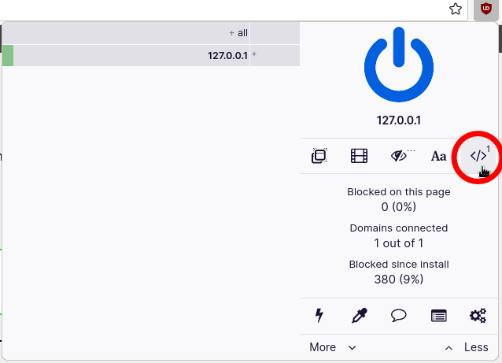
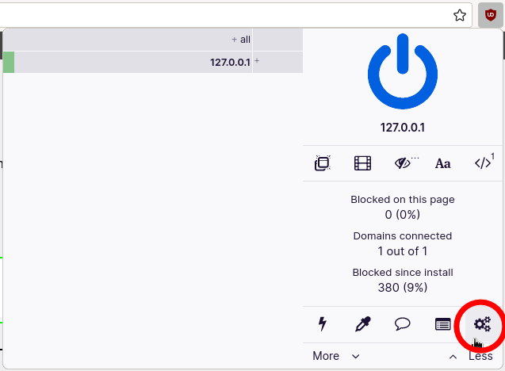
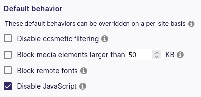

Firefox
Firefox Chrome
Chrome uBlock Origin
uBlock Origin Disabling JavaScript Using uBlock Origin
Disabling JavaScript Using uBlock Origin
-
Download and install uBlock Origin for your web browser:
-
Click on the
</>icon to disable JavaScript on the current website.
 Firefox:
Firefox:  Chrome:
Chrome: Disabling JavaScript by default on every site
-
Go to uBlock Origin's dashboard.
 -
Under "Default behavior", check "Disable JavaScript".
